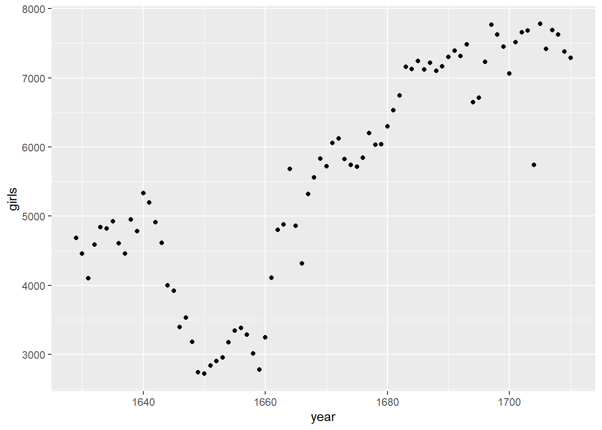
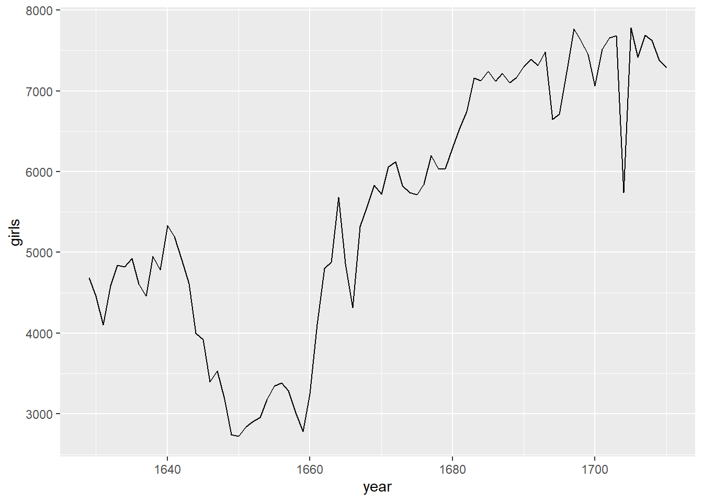
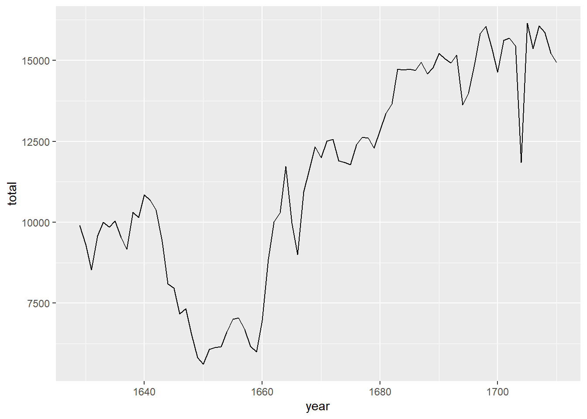

install.packages("tidyverse")
install.packages("openintro")Lab 1: Introduction to Quarto Documents
Introduction to R, RStudio, and Quarto
The RStudio Interface
The goal of this lab is to introduce you to R and RStudio, which you’ll be using throughout this course both to learn the statistical concepts discussed in the course and to analyze real data and come to informed conclusions. To clarify which is which: R is the name of the programming language itself and RStudio is a convenient interface for working with R.
As the labs progress, you are encouraged to explore beyond what the labs dictate; a willingness to experiment will make you a much better programmer! Before we get to that stage, however, you need to build some basic fluency in R. First, we will explore the fundamental building blocks of R and RStudio: the RStudio interface, reading in data, and basic commands for working with data in R.
Go ahead and launch RStudio. You should see a window with three separate ‘panes’ or panels.
The panel on the lower left is where the action happens. This panel is called the console. Every time you launch RStudio, it will have the same text at the top of the console telling you the version of R that you’re running. Below that information is the prompt, indicated by the > symbol. As its name suggests, this prompt is really a request: a request for a command. Initially, interacting with R is all about typing commands and interpreting the output. These commands and their syntax have evolved over decades (literally) and now provide what many users feel is a fairly natural way to access data and organize, describe, and invoke statistical computations.
The panel in the upper right contains your environment as well as a history of the commands that you’ve previously entered. When we begin reading in data and creating variables, you will see the environment window update with these items.
The panel in the lower right contains tabs for browsing the files in your project folder, accessing help files for R functions, installing and managing R packages, and inspecting visualizations. By default, all data visualizations you make will appear directly below the code you used to create them. If you would rather your plots appear in the plots tab, you will need to change your global options.
R Packages
R is an open-source programming language, meaning that users can contribute packages that make our lives easier, and we can use them for free. For this lab, and many others in the future, we will use the following:
- The tidyverse “umbrella” package which houses a suite of many different
Rpackages: for data wrangling and data visualization - The openintro
Rpackage: for data and custom functions with the OpenIntro resources
In the lower right hand corner click on the Packages tab. Type the name of each of these packages (tidyverse, openintro) into the search box to see if they have been installed on your machine. If these packages do not appear when you type in their name, install them by copying and pasting or typing the following two lines of code into the console of your RStudio session. Be sure to press enter/return after each line of code.
After pressing enter/return, a stream of text will begin, communicating the process R is going through to install the package from the location you selected when you installed R. If you were not prompted to select a server for downloading packages when you installed R, RStudio may prompt you to select a server from which to download; any of them will work.
You only need to install packages once, but you need to load them each time you relaunch RStudio. We load packages with the library function. Copy and paste or type the the following two lines in your console to load the tidyverse and openintro packages into your working environment.
library(tidyverse)
library(openintro)We are choosing to use the tidyverse package because it consists of a set of packages necessary for different aspects of working with data, anything from loading data to wrangling data to visualizing data to analyzing data. Additionally, these packages share common philosophies and are designed to work together. You can find more about the packages in the tidyverse at https://tidyverse.org.
Creating a reproducible lab report
We will be using Quarto Documents to create reproducible lab reports. Quarto is the evolution of R Markdown, and supports more languages, including Python and GraphViz. For an explanation of why to we might want reproducible lab reports, this video provides a good explanation. Note that they are referencing R Markdown rather than Quarto; the reasoning is the same regardless of the approach.
Going forward you should refrain from typing your code directly in the console, as this makes it very difficult to remember and reproduce the output you want to reference. Potentially the most important feature of Quarto documents is that they allow for us to nest our R code within a written report. In an Quarto document, R code appears in a gray box, which we call “code chunks.” The Quarto document knows that the gray box contains R code because it begins with three tick marks (```), followed by two curly braces that contain a lowercase letter r ({r}).
Instead of typing our R code into the console, we encourage you to type any code you produce (final correct answer, or anything you’re just trying out) in the R code chunk associated with each problem. You can execute the R code you type in these code chunks similar to how you typed code into the console and pressed enter/return. Within the code chunk there are two ways to execute a line of R code: (1) place your cursor on the line on code and press Ctrl-Enter or Cmd-Enter at the same time, or (2) place your cursor on the line and press the “Run” button in the upper right hand corner of the Quarto document. Alternatively, if you wanted to run all of the R code in a given code chunk, you can click on the “Play” button in the upper right hand corner of the code chunk (green sideways triangle).
If at any point you need to start over and run all of the code chunks before a specific code chunk, you click on the “Fastforward” button in the upper right hand corner of that code chunk (gray upside down triangle with a bar below). This will run every code chunk that occurred before that code chunk, but will not execute the R code included in that code chunk.
Open the file “Lab_1_report.qmd” and we will get started!
Dr. Arbuthnot’s Baptism Records
To get started, let’s take a peek at the data.
arbuthnot# A tibble: 82 × 3
year boys girls
<int> <int> <int>
1 1629 5218 4683
2 1630 4858 4457
3 1631 4422 4102
4 1632 4994 4590
5 1633 5158 4839
6 1634 5035 4820
7 1635 5106 4928
8 1636 4917 4605
9 1637 4703 4457
10 1638 5359 4952
# ℹ 72 more rowsAgain, you can run the code above by:
- placing your cursor on the line and pressing Ctrl-Enter or Cmd-Enter
- placing your cursor on the line and pressing the “Run” button in the upper right hand corner of the Quarto document, or
- by clicking on the green arrow at the top right hand corner of the code chunk
The single line of code included in this code chunk instructs R to load some data: the Arbuthnot baptism counts for boys and girls. You should see that the Environment tab in the upper right hand corner of the RStudio window now lists a data set called arbuthnot that has 82 observations on 3 variables. As you interact with R, you will create objects for a variety of purposes. Sometimes you load the objects into your workspace by loading a package, as we have done here, but sometimes you create objects yourself as a byproduct of a computation process, for an analysis you have performed, or for a visualization you have created.
The Arbuthnot data set refers to the work of Dr. John Arbuthnot, an 18th century physician, writer, and mathematician. He was interested in the ratio of newborn boys to newborn girls, so he gathered the baptism records for children born in London for every year from 1629 to 1710. Once again, we can view the data by running the code below or by typing the name of the dataset into the console. Be careful the spelling and capitalization you use! R is case sensitive, so if you accidentally type Arbuthnot R will tell you that object cannot be found.
arbuthnotThis command does display the data for us, however, printing the whole dataset in the console is not that useful. One advantage of RStudio is that it comes with a built-in data viewer. The Environment tab (in the upper right pane) lists the objects in your environment. Clicking on the name arbuthnot will open up a Data Viewer tab next to your Quarto document, which provides an alternative display of the data set. This display should feel similar to viewing data in Excel, where you are able to scroll through the dataset to inspect it. However, unlike Excel, you will not be able to edit the data in this tab. Once you are done viewing the data, you can close this tab by clicking on the x in the upper left hand corner.
When inspecting the data, you should see four columns of numbers and 82 rows. Each row represents a different year that Arbuthnot collected data. The first entry in each row is the row number (an index we can use to access the data from individual years if we want), the second is the year, and the third and fourth are the numbers of boys and girls baptized that year, respectively. Use the scrollbar on the right side of the console window to examine the complete data set.
Note that the row numbers in the first column are not part of Arbuthnot’s data. R adds these row numbers as part of its printout to help you make visual comparisons. You can think of them as the index that you see on the left side of a spreadsheet. In fact, the comparison of the data to a spreadsheet will generally be helpful. R has stored Arbuthnot’s data in an object similar to a spreadsheet or a table, which R calls a data frame.
You can see the dimensions of this data frame as well as the names of the variables and the first few observations by inserting the name of the dataset into the glimpse() function, as seen below:
glimpse(arbuthnot)This command should output the following:
Rows: 82
Columns: 3
$ year <int> 1629, 1630, 1631, 1632, 1633, 1634, 1635, 1636, 1637, 1638, 1639…
$ boys <int> 5218, 4858, 4422, 4994, 5158, 5035, 5106, 4917, 4703, 5359, 5366…
$ girls <int> 4683, 4457, 4102, 4590, 4839, 4820, 4928, 4605, 4457, 4952, 4784…We can see that there are 82 observations and 3 variables in this dataset. The variable names are year, boys, and girls. At this point, you might notice that many of the commands in R look a lot like functions from math class; that is, invoking R commands means supplying a function with some number of inputs (what are called arguments) which the function uses to produce an output. The glimpse() command, for example, took a single argument, the name of a data frame and produced a display of the dataset as an output.
Some Exploration
Let’s start to examine the data a little more closely. We can access the data in a single column of a data frame by extracting the column with a $. For example, the code below extracts the boys column from the arbuthnot data frame.
arbuthnot$boysThis command will only show the number of boys baptized each year. R interprets the $ as saying “go to the data frame that comes before me, and find the variable that comes after me.”
Exercise 1
What command would you use to extract just the counts of girls baptized? Try it out in the console!
Notice that the way R has printed these data is different. When we looked at the complete data frame, we saw 82 rows, one on each line of the display. These data have been extracted from the data frame, so they are no longer structured in a table with other variables. Instead, these data are displayed one right after another. Objects that print out in this way are called vectors; similar to the vectors you have seen in mathematics courses, vectors represent a list of numbers. R has added numbers displayed in [brackets] along the left side of the printout to indicate each entry’s location within the vector. For example, 5218 follows [1], indicating that 5218 is the first entry in the vector. If [43] was displayed at the beginning of a line, that indicate that the first number displayed on that line would correspond to the 43rd entry in that vector.
Data visualization
R has some powerful functions for making graphics. We can create a simple plot of the number of girls baptized per year with the following code:
ggplot(data = arbuthnot, aes(x = year, y = girls)) +
geom_point()
In this code, we use the ggplot() function to build a plot. If you run this code chunk, a plot will appear below the code chunk. The Quarto document displays the plot below the code that was used to generate it, to give you an idea of what the plot would look like in a final report.
The command above also looks like a mathematical function. This time, however, the function requires multiple inputs (arguments), which are separated by commas.
With ggplot():
- The first argument is always the name of the dataset you wish to use for plotting.
- Next, you provide the variables from the dataset to be assigned to different
aesthetic elements of the plot, such as the x and the y axes.
These commands will build a blank plot, with the variables you assigned to the x and y axes. Next, you need to tell ggplot() what type of visualization you would like to add to the blank template. You add another layer to the ggplot() by:
- adding a + at the end of the line, to indicate that you are adding a layer
- then specify the geometric object to be used to create the plot.
Since we want a scatterplot, we use geom_point(). This tells ggplot() that each data point should be represented by one point on the plot. If you wanted to visualize the above plot using a line graph instead of a scatterplot, you would replace geom_point() with geom_line(). This tells ggplot() to draw a line from each observation with the next observation (sequentially).
ggplot(data = arbuthnot, aes(x = year, y = girls)) +
geom_line()
Use the plot to address the following question:
Exercise 2
Is there an apparent trend in the number of girls baptized over the years? How would you describe it? (To ensure that your lab report is comprehensive, be sure to include the code needed to make the plot as well as your written interpretation.)
You might wonder how you are supposed to know the syntax for the ggplot() function (or any of the functions we use!). Thankfully, R documents all of its functions extensively. To learn what a function does and how to use it (e.g. the function’s arguments), just type in a question mark followed by the name of the function that you’re interested in into the console. Type the following in your console:
?ggplotNotice that the help file comes to the forefront, replacing the plot in the lower right panel. You can toggle between the tabs by clicking on their names.
R as a big calculator
Now, suppose we want to plot the total number of baptisms. To compute this, we could use the fact that we can use R as a big calculator. To do this, we can type in mathematical expressions such as the below calculation into the console.
5218 + 4683This calculation would provide us with the total number of baptisms in 1629. We could then repeat this calculation once for each year. This would probably take us a while, but luckily there is a faster way! If we add the vector for baptisms for boys to that of girls, R can compute each of these sums simultaneously.
arbuthnot$boys + arbuthnot$girlsWhat you will see is a list of 82 numbers. These numbers appear as a list, because we are working with vectors rather than a data frame. Each number represents the sum of how many boys and girls were baptized that year. You can take a look at the first few rows of the boys and girls columns to see if the calculation is right.
Adding a new variable to the data frame
We are interested in using this new vector of the total number of baptisms to generate some plots, so we’ll want to save it as a permanent column in our data frame. We can do this using the following code:
arbuthnot <- arbuthnot |>
mutate(total = boys + girls)This code has a lot of new pieces to it, so let’s break it down. In the first line we are doing two things:
- adding a new total column to this updated data frame, and
- overwriting the existing arbutnot data frame with an updated data frame that includes the new total column.
We are able to chain these two processes together using the piping (|>) operator. The piping operator takes the output of the previous expression and “pipes it” into the first argument of the next expression.
To continue our analogy with mathematical functions, x |> f(y) is equivalent to f(x, y). Connecting arbuthnot and mutate(total = boys + girls) with the pipe operator is the same as typing mutate(arbuthnot, total = boys + girls), where arbuthnot becomes the first argument included in the mutate() function.
Note
A note on piping: Note that we can read these two lines of code as the following:
“Take the arbuthnot dataset and pipe it into the mutate function. Mutate the arbuthnot data set by creating a new variable called total that is the sum of the variables called boys and girls. Then assign the resulting dataset to the object called arbuthnot, i.e. overwrite the old arbuthnot dataset with the new one containing the new variable.”
This is equivalent to going through each row and adding up the boys and girls counts for that year and recording that value in a new column called total.
Where is the new variable? When you make changes to variables in your dataset, click on the name of the dataset again to update it in the data viewer.
You’ll see that there is now a new column called total that has been tacked onto the data frame. The special symbol <- performs an assignment, taking the output of the piping operations and saving it into an object in your environment. In this case, you already have an object called arbuthnot in your environment, so this command updates that data set with the new mutated column.
You can make a line plot of the total number of baptisms per year with the following code:
ggplot(data = arbuthnot, aes(x = year, y = total)) +
geom_line()
In an similar fashion, once you know the total number of baptisms for boys and girls in 1629, you can compute the ratio of the number of boys to the number of girls baptized with the following code:
5218 / 4683Alternatively, you could calculate this ratio for every year by acting on the complete boys and girls columns, and then save those calculations into a new variable named boy_to_girl_ratio:
arbuthnot <- arbuthnot |>
mutate(boy_to_girl_ratio = boys / girls)You can also compute the proportion of newborns that are boys in 1629 with the following code:
5218 / (5218 + 4683)Or you can compute this for all years simultaneously and add it as a new variable named boy_ratio to the dataset:
arbuthnot <- arbuthnot |>
mutate(boy_ratio = boys / total)Notice that rather than dividing by boys + girls we are using the total variable we created earlier in our calculations!
Exercise 3
Now, generate a plot of the proportion of boys born over time. What do you see?
Tip: If you use the up and down arrow keys in the console, you can scroll through your previous commands, your so-called command history. You can also access your command history by clicking on the history tab in the upper right panel. This can save you a lot of typing in the future.
Finally, in addition to simple mathematical operators like subtraction and division, you can ask R to make comparisons like greater than, >, less than, <, and equality, == (Note: that is two = back-to-back). For example, we can create a new variable called more_boys that tells us whether the number of births of boys outnumbered that of girls in each year with the following code:
arbuthnot <- arbuthnot |>
mutate(more_boys = boys > girls)This command adds a new variable to the arbuthnot data frame containing the values of either TRUE if that year had more boys than girls, or FALSE if that year did not (the answer may surprise you). This variable contains a different kind of data than we have encountered so far. All other columns in the arbuthnot data frame have values that are numerical (the year, the number of boys and girls). Here, we’ve asked R to create logical data, data where the values are either TRUE or FALSE. In general, data analysis will involve many different kinds of data types, and one reason for using R is that it is able to represent and compute many of them.
More Practice
In the previous few pages, you recreated some of the displays and preliminary analysis of Arbuthnot’s baptism data. Your assignment involves repeating these steps, but for present day birth records in the United States. The data are stored in a data frame called present.
To find the minimum and maximum values of columns, you can use the functions min() and max() within a summarize() call, which you will learn more about in the following lab.
Here’s an example of how to find the minimum and maximum amount of boy births in a year:
arbuthnot |>
summarize(min = min(boys),
max = max(boys)
)# A tibble: 1 × 2
min max
<int> <int>
1 2890 8426Answer the following questions with the present data frame:
Exercise 4
What years are included in this data set? What are the dimensions of the data frame? What are the variable (column) names?
Exercise 5
How do these counts compare to Arbuthnot’s? Are they of a similar magnitude?
Exercise 6
Make a plot that displays the proportion of boys born over time. What do you see? Does Arbuthnot’s observation about boys being born in greater proportion than girls hold up in the U.S.? Include the plot in your response. Hint: You should be able to reuse your code from Exercise 3 above, just replace the name of the data frame.
Exercise 7
In what year did we see the most total number of births in the U.S.? Hint: First calculate the totals and save it as a new variable. Then, sort your dataset in descending order based on the total column. You can do this interactively in the data viewer by clicking on the arrows next to the variable names. To include the sorted result in your report you will need to use two new functions. First we use arrange() to sort the variable. Then we can arrange the data in a descending order with another function, desc(), for descending order. The sample code is provided below.
present |>
arrange(desc(total))These data come from reports by the Centers for Disease Control. You can learn more about them by bringing up the help file using the command ?present.
Additional Resources
That was a short introduction to R and RStudio, but we will provide you with more functions and a more complete sense of the language as the course progresses.
In this course we will be using the suite of R packages from the tidyverse. The book R For Data Science by Grolemund and Wickham is a fantastic resource for data analysis in R with the tidyverse. If you are Goggling for R code, make sure to also include these package names in your search query. For example, instead of Goggling “scatterplot in R”, Goggle “scatterplot in R with the tidyverse”.
These may come in handy throughout the semester:
Note that some of the code on these cheatsheets may be too advanced for this course. However the majority of it will become useful throughout the semester.
This lab modified from https://openintrostat.github.io/oilabs-tidy/01_intro_to_r/intro_to_r.html under a Creative Commons Attribution-ShareAlike 4.0 International License